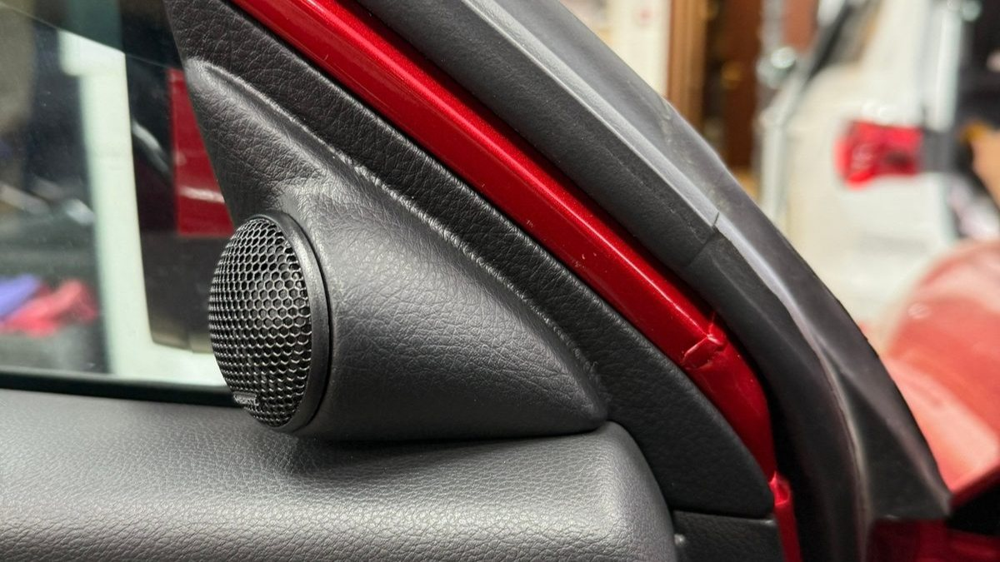
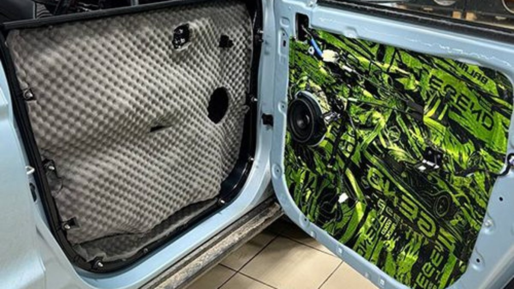

Утро, минус восемь, машина простояла ночь во дворе. Вы садитесь, включаете любимый трек погромче, чтобы проснуться, и на первом же басу из двери слева доносится не звук, а какое-то шуршание, будто в динамик насыпали песка. Убавляете громкость, и всё почти нормально. Прибавляете, и хрип возвращается.
Хрипят динамики по трём причинам: на них приходит уже искажённый сигнал, динамик повреждён механически или ему мешает то, что вокруг него: дверь, крепление, проводка. Половину из этого можно проверить самому за вечер, не снимая ни одной обшивки. Ниже разбираем, как отличить одно от другого и что делать в каждом случае.

Динамик устроен просто. Сигнал от магнитолы идёт в звуковую катушку, она сидит в зазоре постоянного магнита и двигается туда-обратно вместе с диффузором. Диффузор толкает воздух, это и есть звук. Держится вся подвижная система на двух подвесах: внешнем, по краю диффузора, и центрирующей шайбе под ним.
Отсюда понятно, где может возникнуть хрип. Катушка начинает задевать магнит, если её перекосило или она перегрелась. Диффузор трещит, если он порван или размок. Подвес шуршит, если затвердел или рассыпался. И отдельная история, когда сам динамик цел, а грязный сигнал ему уже подают.
- Перегрузка встроенного усилителя. Усилитель в магнитоле небольшой мощности. Когда громкость выкручена почти до конца, а эквалайзер ещё и поднимает низы, усилитель упирается в свой предел и начинает срезать верхушки звуковой волны. Это называют клиппингом. Динамик честно воспроизводит то, что пришло, а пришло уже искажённое. Такой хрип появляется на громкости и на басу и пропадает, если убавить.
- Перекос или перегрев катушки. Если динамик долго играл в клиппинге или на него подавали больше, чем он рассчитан, катушка греется, лак на проводе плывёт, каркас может деформироваться. Катушка начинает тереться о магнит, и хрип слышен уже на тихой громкости.
- Порванный или размокший диффузор. В дверь попадает вода: по стеклу, через уплотнитель внизу окна. Зимой туда же заносит снежную кашу с реагентами. Бумажный диффузор от влаги теряет жёсткость, на нём появляются трещины, и он дребезжит.
- Затвердевший или рассыпавшийся подвес. Поролоновый подвес у старых динамиков со временем крошится. Резиновый на морозе дубеет, и в первые минуты после холодной ночи динамик звучит сухо и с призвуком. Когда салон прогреется, звук часто приходит в норму.
- Плохой контакт. Окислившаяся клемма на динамике, перетёртый провод в гофре между дверью и кузовом, разъём, который болтается после чужого ремонта. Хрип тогда появляется рывками, чаще при открытии и закрытии двери или на кочках.
Есть ещё причина, которую путают с хрипом, хотя динамик тут ни при чём: дребезг пластика, незакреплённой ручки, троса замка внутри двери. Звук похож, но его источник рядом, а не в самом динамике.
Ярославская зима бьёт по акустике сразу с трёх сторон. Холод делает подвес и диффузор жёстче, и громкий бас в первые минуты после запуска для динамика тяжелее, чем летом. Влага и соль с дороги попадают в дверь, и всё, что там есть из металла, окисляется быстрее, включая клеммы. А аккумулятор на морозе отдаёт меньше, и если машина старая, напряжение на магнитоле при работе печки и обогревов просаживается, что добавляет усилителю искажений на громкости.
Поэтому совет простой: первые несколько минут после холодной ночи не выкручивайте громкость и бас. Дайте салону прогреться.

Начните с того, что не требует инструментов. Каждый шаг отсекает часть причин.
1. Найдите, какой именно динамик. В настройках магнитолы есть баланс (левый и правый) и фейдер (передний и задний). Сводите звук по очереди на каждый угол. Если хрипит только один, проблема в нём или в его проводке. Если все, скорее всего, виноват сигнал.
2. Смените источник. Включите другой трек, радио, музыку с флешки вместо Bluetooth. Сильно сжатые файлы и плохой поток по Bluetooth тоже дают «грязь» на высоких, но она одинаковая во всех динамиках.
3. Обнулите эквалайзер. Уберите подъём низов, тонкомпенсацию (Loudness) и всякие эффекты вроде «концертного зала». Если на ровной настройке хрип ушёл даже на той же громкости, дело в перегрузке усилителя, а динамики живы.
4. Убавьте громкость на треть. Хрип пропал полностью, значит, это клиппинг. Хрип остаётся на тихом звуке, значит, что-то с самим динамиком.
5. Прижмите обшивку двери ладонью. Если призвук изменился или исчез, звенит пластик или что-то внутри двери, а не динамик.
6. Похлопайте дверью и пошевелите её на петлях на включённой музыке. Звук пропадает или трещит, значит, ищите плохой контакт в проводке.
Если после этих шагов понятно, что виноват один конкретный динамик и он хрипит даже тихо, дальше уже нужно снимать обшивку и смотреть диффузор, подвес и клеммы.
Отдельный случай: динамики новые, а захрипели почти сразу. Обычно причин три.
- Динамик посажен без проставочного кольца или на кривое. Он упирается в стекло или механизм стеклоподъёмника, или его корзина повело при затяжке. Диффузору некуда ходить, и на басу он задевает.
- Не та фазировка. Плюс и минус перепутаны на одном из динамиков. Хрипа как такового нет, но бас пропадает и звук становится «пустым», что часто принимают за неисправность.
- Динамики мощнее, а усилитель тот же. Новые компоненты с большей паспортной мощностью не дают больше громкости от той же магнитолы. Человек привычно выкручивает звук, усилитель уходит в клиппинг, и новые динамики хрипят так же, как старые. А при долгой работе в таком режиме катушки и греются.
- Не глушите хрип эквалайзером через минус по всем полосам. Это скрывает симптом, а причина остаётся.
- Не ставьте мощный сабвуфер, рассчитывая разгрузить двери. Если хрипит из-за перегрузки магнитолы, сабвуфер с отдельным усилителем действительно снимет с неё часть баса. Но если порван диффузор, он так и останется порванным.
- Не клейте трещину на диффузоре клеем «чтобы доездить». Масса подвижной системы меняется, динамик звучит хуже, а трещина ползёт дальше.
- Не оставляйте дверь без защиты от воды. Новый динамик в мокрой двери проживёт недолго. Ставят влагозащитные экраны и проверяют, что дренаж в двери не забит.
Настройка. Если динамики целы, а хрип от перегрузки, иногда достаточно правильно выставить эквалайзер и не выкручивать громкость в последнюю четверть.
Замена динамиков. Если повреждён один, менять лучше парой: левый и правый одной модели, иначе сцена смещается в сторону. При замене стоит сразу поставить нормальные кольца и защиту от воды.
Усилитель. Когда хочется громче и чище, а магнитола не тянет, внешний усилитель берёт нагрузку на себя. Динамики получают чистый сигнал с запасом мощности и не хрипят на громкости, на которой раньше уже сдавались.
Подготовка двери. Дверь – это короб для динамика. Вибропоглотитель на металл и герметизация технологических отверстий убирают дребезг и дают басу плотность. Часто именно после этого пропадает призвук, который принимали за хрип.
Почему хрипят динамики только на басу? Чаще всего это перегрузка усилителя магнитолы или подъём низов в эквалайзере. Бас требует от усилителя больше всего энергии, поэтому клиппинг первым слышен именно там. Если на ровном эквалайзере и меньшей громкости хрип ушёл, динамики, скорее всего, целы.
Можно ли ездить, если один динамик хрипит? Можно, но держите громкость пониже. Если хрип от перекоса катушки или клиппинга, на громкости динамик быстрее выходит из строя окончательно.
Зачем менять динамики парой, если сломался один? Левый и правый должны звучать одинаково, иначе звук смещается к одной стороне и пропадает объём. Старый и новый динамик даже одной модели могут звучать по-разному.
Хрипят все динамики сразу, что делать? Если хрипят все и сразу, причина почти наверняка в сигнале: эквалайзер, громкость, источник или сама магнитола. Начните с обнуления настроек и другого источника.
Хрип пропадает, когда салон прогреется. Это нормально? Это признак того, что подвес или диффузор на морозе дубеют. Динамик пока жив, но первые минуты после холодной ночи лучше слушать тише. Если хрип становится заметнее с каждой зимой, пора задуматься о замене.
Студия «Звук на Волге», Ярославль, проспект Октября, 82б. Пн–пт 8:30–20:00, сб–вс 10:00–19:00. Найдём, откуда хрип: сигнал, динамик или дверь, и предложим решение под ваш бюджет, от замены штатных динамиков до системы с усилителем. Компоненты можно послушать на стенде в студии до покупки, а после установки приезжайте, если захотите поменять настройки.
Подробнее про автозвук и запись: автозвук в Ярославле. Телефон +7 902 220-75-55, сообщения в ВК: vk.me/avtostil_yaroslavl.
Раньше нас знали как «Автостиль». Мы обновились и, раз занимаемся звуком в Ярославле, назвались «Звук на Волге». Адрес тот же.